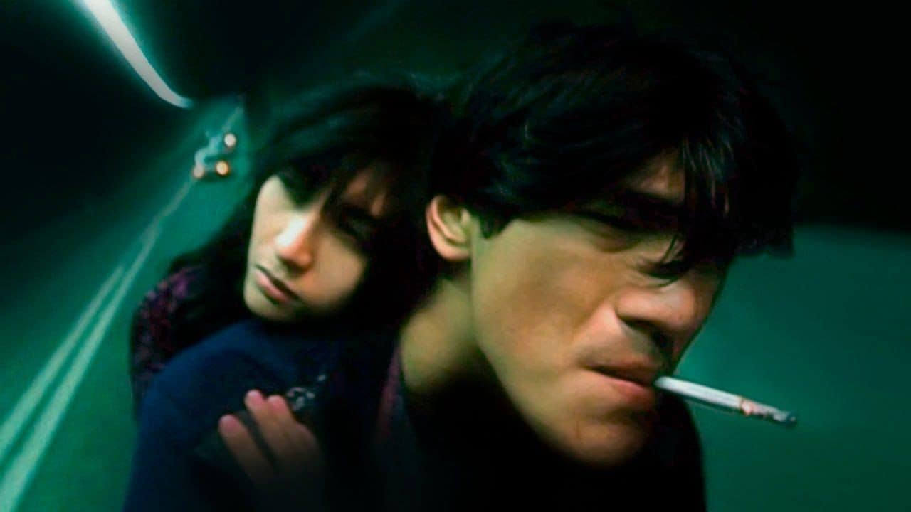
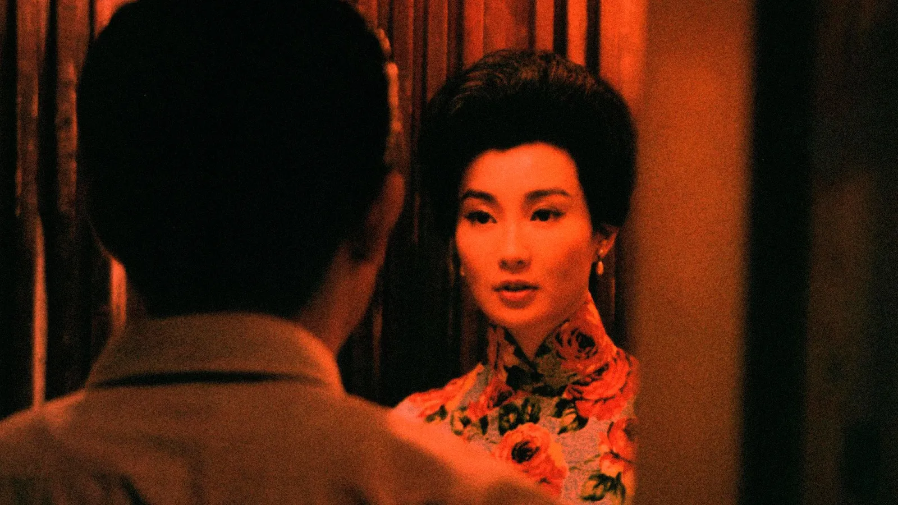

World of Wong Kar Wai: Like the Most Beautiful Times
"While cinema can be edifying, most of us go to the movies to be set free from our daily lives and carried off to a world richer, more delightful, and more resonant than our own. Few films do that better than those of Wong Kar Wai, the Hong Kong auteur whose iconic sunglasses are more famous than many other directors' movies. With his blend of pop exuberance and alienated melancholy, he is one of those rare filmmakers whose work is always recognizably their own: you can feel his presence in every ticking clock (there are scads), in every shiver of photogenic heartbreak, in every moment of inspired silliness - such as a policeman talking to his bar of soap."
Wong Kar-wai: The master of 'Hollywood East'
"Hong Kong has been a central character of several of Wong's films. But what sets him apart from his peers is that he looks at the city with an outsider's lens. Speaking to Laurent Tirard in Moviemakers' Master Class: Private Lessons from the World's Foremost Directors (2002), he described himself not as a director, but "an audience member who stepped behind a camera". Unlike other film-makers who immersed themselves within the city of Hong Kong, such as Johnnie To and Stephen Chow, the distance in Wong's films allowed him to create a mesmerising, enigmatic cinematic world."
A Tribute to Wong Kar-wai: The King of Wrapping it up Beautifully
"Wong Kar-wai is undoubtedly the most well-known of all Hong Kong directors. To watch one of his films is to be surrounded by a world of color, motion, and music. The influence of his eclectic style has reached directors worldwide, he is decidedly one of the greatest living filmmakers. Born in 1958 in Shanghai, Wong's family relocated to the more culturally independent Hong Kong when he was a child. The city has been his greatest subject, no other modern director has been so fascinated by and so successful in capturing the spirit of a city and sharing it with the world."